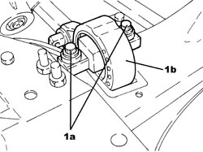
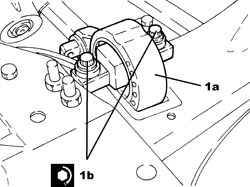

1008B20 POWER UNIT REAR SUPPORT FLEXIBLE MOUNTING - REPLACE
- Path
- Procedures > 10 ENGINE > 1008 POWER UNIT SUPPORTS > 1008B POWER UNIT SUPPORT MOUNTINGS > 1008B20 POWER UNIT REAR SUPPORT FLEXIBLE MOUNTING - REPLACE
- Kind
- repair procedure (removal / refitting; the operation number is the code)
- Applies to
- engines: 2.2 JTS; all production periods
- Interactive page
- https://sloeber94.github.io/elrnDB-aBrrSpdr/en/#/946001802
Applies to: engines: 2.2 JTS; all production periods
 Removing
Removing
 Refitting
RefittingOp. 4450B12 FRONT WHEELS (TWO) - R+R
Op. 1076B72 INTERMEDIATE EXHAUST PIPE WITH HOSE SECTION - R+R
Op. 4410D10 FRONT SUSPENSION FRAME - R+R
(proceed with the removal only without carrying out the dismantling at the bench).
Op. 4410C10 FRONT SUSPENSION ANTI-ROLL BAR - R+R - CHECK WHEEL GEOMETRY SEPARATELY
1. Undo the bolts (1a) and remove the flexible mounting for the power unit rear support (1b) from the front suspension frame.

Applies to: engines: 2.2 JTS; all production periods
Refitting
Removing1. Place the power unit rear support flexible mounting (1a) in its housing and secure it by tightening the new bolts (1b) to the recommended torque.
Component | Fastening | dia | Value (daNm) | Validity |
|---|---|---|---|---|
Power unit rigid rear support flexible mounting | Bolt (to be replaced) | M12 | (front suspension frame side) 6.3 - 7.7 + 60° |

Applies to: engines: 2.2 JTS; all production periods
Op. 4410C10 FRONT SUSPENSION ANTI-ROLL BAR - R+R - CHECK WHEEL GEOMETRY SEPARATELY
Op. 4410D10 FRONT SUSPENSION FRAME - R+R
Op. 1076B72 INTERMEDIATE EXHAUST PIPE WITH HOSE SECTION - R+R